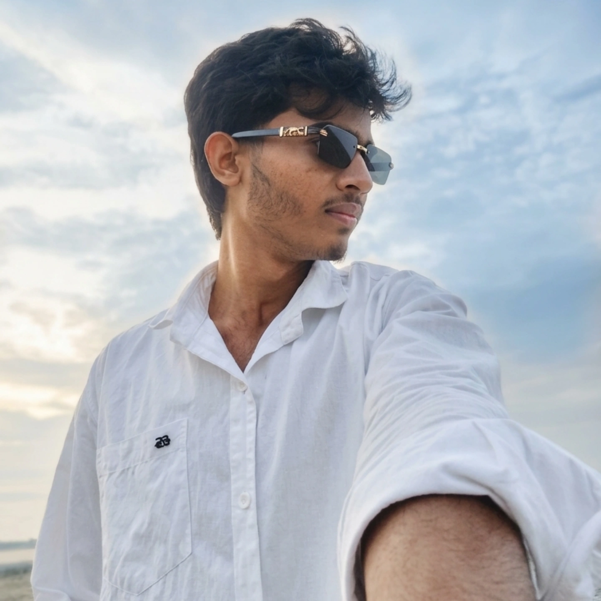

Jiyaur Rahman
Political Science Student | Future Civil Servant
About Me
Passionate Political Science student from Assam with an interest in public administration, leadership, and continuous learning.
Education
B.A. Political Science
B. Borooah College, Guwahati
Contact Information
📞 8638109459
📧 jiyaurfree@gmail.com